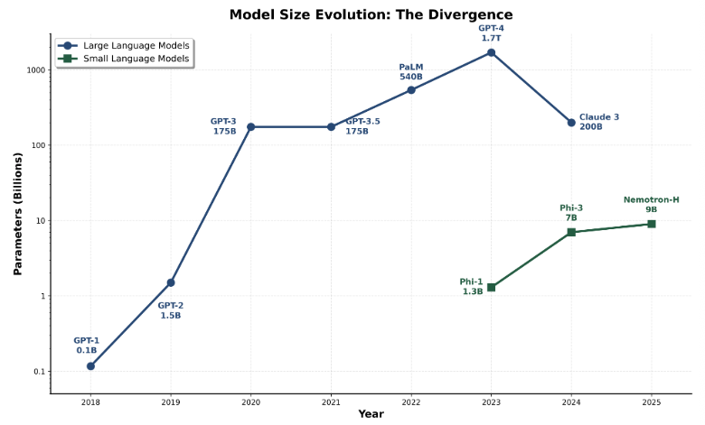
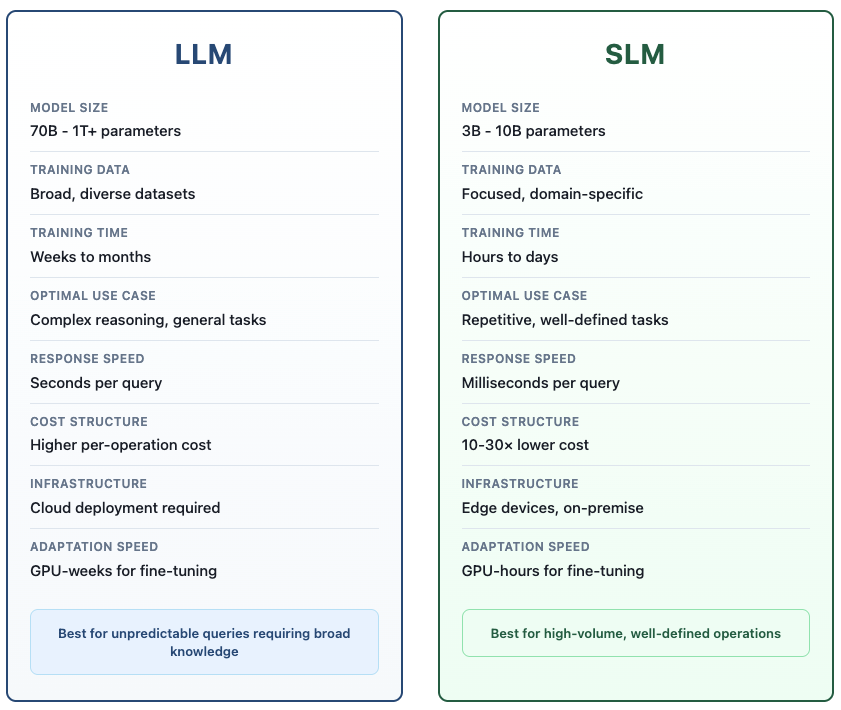

The Future of AI Isn’t Bigger — It’s Smaller
An Executive Introduction to Small Language Models (SLMs)
1 Introduction
For years, the AI industry chased a single dream: one massive model that could do everything. We went from 7 billion parameters to a trillion, racing toward a “God Model.” But in 2025, the wind has shifted. We are entering the era of Small Language Models (SLMs).
Small Language Models (SLMs)—compact, specialized AI systems typically under 10 billion parameters—are reshaping how organizations deploy AI. They’re not cheaper versions of GPT-4. They’re purpose-built engines designed for specific tasks, offering faster performance, lower costs, and better privacy controls.
This matters because the next wave of AI isn’t about chatbots. It’s about autonomous agents that make hundreds of decisions per transaction. And those agents need a different architecture—one where small, specialized models handle routine work while large models tackle genuine complexity.
2 What is a Small Language Model?
Think of SLMs as precision tools rather than Swiss Army knives. While large language models grew from 0.1 billion to 1.7 trillion parameters over seven years, small language models emerged in 2023 as a strategic optimization—staying in the 3-10 billion range while achieving comparable results on specific tasks.
A 7-billion parameter model fine-tuned for loan document extraction will outperform GPT-4 on that specific task—while costing 30 times less to run.

2.1 The Trade-Off: Breadth vs. Depth
Large models excel at versatility. GPT-4 can write poetry, debug code, and explain quantum physics in the same conversation. But using a 400-billion parameter model to extract dates from invoices is like hiring a philosophy professor to sort your mail — effective, but absurdly expensive.
Small models excel at efficiency. A 3-billion parameter model trained specifically on financial documents can’t discuss medieval history, but it will process loan applications faster and more accurately than a generalist model. Since it focuses on one domain, it delivers results in milliseconds rather than seconds—and at a fraction of the cost.
The economics are straightforward: if you’re running the same type of task thousands of times daily, specialized models make sense. If you need broad capabilities for unpredictable queries, large models remain essential.

3 Proven Performance: SLMs Competing with LLMs
The performance gap between small and large models has closed. In head-to-head testing, 7-billion parameter models now match the performance of models 10 times their size—and specifically outperform them on specialized benchmarks.
Four examples demonstrate how far small models have come:1
Microsoft Phi-3 (7B parameters) matches 70-billion parameter models on code generation and language tasks. The difference? Phi-3 runs 15 times faster and costs a fraction to deploy.
NVIDIA Nemotron-H family (9B parameters) handles complex instructions as accurately as 30-billion parameter models while using one-tenth the computational resources. For high-volume applications, this translates to dramatically lower infrastructure costs.
Salesforce xLAM-2 (8B parameters) outperforms GPT-4o and Claude 3.5 Sonnet on tool-calling tasks—the ability to interact with external APIs. This is critical for agentic systems where precision matters more than poetry.
DeepSeek-R1-Distill-Qwen (7B parameters) beats Claude 3.5 Sonnet on math benchmarks (achieving 97.3% vs 78.3% on MATH-500). A 7-billion parameter model outperforming a flagship system on reasoning signals that the small-model approach has reached maturity.
The bottom line: Small models now deliver 95%+ accuracy at 10% of the cost for well-defined tasks.
4 The Scalability Problem

The shift to “Small” is driven by autonomous agents. Unlike traditional chatbots where a user asks a question and gets one answer, agents operate in continuous loops — planning, taking action, observing outcomes, and repeating. A single complex user request (e.g., “Plan my travel and book tickets”) might trigger 20 to 50 separate model calls as the agent checks calendars, searches flights, and parses API errors. If every one of those 50 steps uses a massive, expensive model (like GPT-4), the cost for a single transaction explodes. At scale, this becomes unsustainable.
4.1 The Solution: Heterogeneous Architecture
The answer isn’t using one model for everything. It’s using the right model for each task. In this approach, a large model acts as an orchestrator—understanding vague requests, planning the workflow, handling edge cases. Small models execute the routine steps: running database queries, formatting outputs, validating results.
This mixed approach cuts costs by 10-30× while improving reliability. Small models fine-tuned for specific tasks “hallucinate” less than generalist models attempting the same work.1
4.2 Why Agents Specifically Need SLMs
Here’s the economic challenge: Unlike traditional applications where a user submits a single query, agents make dozens of calls per request. A single request might trigger 20-50 model calls. When each call goes to a large model, costs compound rapidly.
Analysis of real agents (MetaGPT, Open Operator, Cradle) reveals that 60-70% of their model calls are repetitive, narrow tasks: parsing JSON, formatting API parameters, validating outputs, simple decision logic. These don’t need a 400-billion parameter model’s “world knowledge.” A 3-billion parameter model trained specifically for the task performs better and costs 30× less.1
5 How Do They Work?
Engineers use the following four advanced techniques to shrink these models while maintaining performance.
1. Distillation: A large “teacher” model generates millions of training examples. A small “student” model learns from these examples, absorbing the teacher’s problem-solving approach without inheriting its size.
2. Pruning: Like trimming a tree, engineers analyze the neural network to identify connections that don’t contribute to output quality. Removing these “dead branches” cuts the model size while preserving accuracy.
3. Quantization: Instead of storing numbers with high precision (3.14159), the model rounds them to simple integers (3). This reduces memory requirements dramatically—enabling powerful AI to run on laptops instead of servers.
4. LoRA (The Skill Plugin): Rather than retraining an entire model for a new task (which takes weeks), LoRA adds a small, specialized layer on top. Think of it as giving the model a task-specific cheat sheet—one for legal contracts, another for loan applications—that adapts the model in hours instead of weeks.
6 SLM Examples
Six leading models from the current SLM landscape:
| Model | Best Use Case | Why? |
|---|---|---|
| Microsoft Phi-3.5 | Logic & Reasoning | Excels at math and analytical tasks. Ideal for agents that need to solve logic puzzles. |
| Qwen 2.5 (Alibaba) | Coding & Multilingual | State-of-the-art for its size; powerhouse for coding and non-English languages. |
| Meta Llama 3.2 | Mobile / Edge | Optimized for ARM processors (phones/tablets). Great for tool calling and strict instructions. |
| Google Gemma 2 | Creative NLP | Built on Gemini technology; strong in conversation and creative writing. |
| Mistral (Ministral) | Low Latency | Designed for extreme speed; ideal for instant-response applications. |
| IBM Granite 3.0 | Enterprise Coding | Trained on business software; excellent for RAG and structured coding tasks. |
7 Banking Applications: Where SLMs Excel
Financial institutions are particularly well-positioned to benefit from SLMs. Banking operations involve high volumes of repetitive, well-defined tasks that are perfect candidates for specialized small models.
7.1 Loan Document Processing
A regional bank processing 10,000 loan applications monthly has two options:
- The Old Way (LLM): GPT-4 at ~$2.50 per application costs $25,000/month.
- The SLM Way: A fine-tuned 3B model costs ~$0.10 per application, totaling $1,000/month.
The SLM, trained specifically on lending documentation, often delivers higher accuracy on domain-specific extractions like debt-to-income ratios, collateral valuations, and employment verification.
7.2 Real-Time Fraud & Compliance Monitoring
Banks need to screen every transaction for fraud. A massive cloud model is too slow and risky for this. An SLM can:
- Flag suspicious transactions in milliseconds
- Run entirely on-premise (no data leaves the bank’s secure network).
- Process 100,000+ transactions daily at a fraction of cloud API costs.
- Adapt overnight to new regulations via fine-tuning.
For privacy-sensitive operations, on-premise deployment eliminates the risk of sending customer data to external API endpoints.
7.3 Customer Service Triage
Instead of forcing every customer to wait for a “genius” AI, banks use a tiered system:
- The Front Line (SLM): A fast local model answers routine questions (“What’s my balance?”) instantly (<200ms).
- The Escalation (LLM): Complex problems are routed to a larger reasoning model.
This hybrid approach delivers sub-second responses for most customers while maintaining quality for complex cases—all while reducing inference costs by 10-15×.
8 The Business Case: The “Escalation” Strategy
Most organizations are adopting a hybrid approach that balances cost and quality.
- Level 1 (The SLM): A fast, cheap local model handles 80% of routine user queries - password resets, simple questions.
- Level 2 (The LLM): If the SLM detects a complex issue or gets confused, it “escalates” the ticket to a more capable cloud model like GPT-4.
This approach cuts costs by 10-20× while maintaining response quality.
Latency: It’s not just about cost—it’s about speed. A local SLM can reply in under 200 milliseconds. A cloud LLM often takes 1–3 seconds. In customer service, that lag is the difference between a quick conversation and a frustrating wait.
Transparency: Large models are black boxes—it’s difficult to explain their decisions. SLMs are simpler, making it easier to trace their logic and satisfy regulatory requirements.
Privacy: SLMs can run entirely on-device. A phone can summarize notifications locally without sending data to the cloud, ensuring privacy and offline functionality.
8.1 The Economics: Beyond Simple Cost Savings
The economic advantages extend beyond per-token pricing:
Inference Efficiency: Serving a 7B SLM requires 10-30× fewer FLOPs than a 70-175B LLM, enabling real-time responses at scale with dramatically lower energy consumption.
Fine-Tuning Agility: Full parameter fine-tuning for SLMs requires only GPU-hours versus GPU-weeks for LLMs. This means behaviors can be added, fixed, or specialized overnight rather than over weeks—critical for rapidly evolving business requirements.
Edge Deployment: SLMs run on consumer-grade GPUs, smartphones, and edge devices. For banks, this means processing sensitive data locally without cloud dependencies, reducing latency and strengthening data control.
Infrastructure Simplicity: SLMs require less or no parallelization across GPUs and nodes, lowering both capital expenditure for hardware and operational costs for maintenance.
8.2 Understanding the Barriers
Three practical barriers have slowed adoption:
1. Infrastructure Inertia: Billions have been invested in centralized LLM inference systems. The industry built tools and expertise around this paradigm first.
2. Benchmark Mismatch: Many SLM evaluations focus on generalist benchmarks where LLMs naturally excel. Task-specific agentic benchmarks tell a different story—one where properly fine-tuned SLMs often outperform much larger models.
3. Awareness Gap: SLMs don’t receive the marketing intensity of flagship LLMs despite often being better suited for production deployment.
These are practical challenges, not fundamental limitations. As advanced inference systems like NVIDIA Dynamo emerge and agentic-specific benchmarks gain prominence, these barriers continue to diminish.
9 Conclusion
The industry spent years chasing bigger models. That phase is over.
The path forward isn’t one massive model doing everything—it’s the right model for each task. Small models handling routine work. Large models tackling genuine complexity. This architecture cuts costs by 10-30× while often improving accuracy on specific tasks.
For banking and other regulated industries, the advantages extend beyond economics: on-premise deployment, faster adaptation to new requirements, and explainable decision-making that satisfies regulators.
The economics are clear: small models handle 60-70% of agent tasks at a fraction of the cost. The performance gap has closed—3-billion parameter models now match 400-billion models on specific tasks. The infrastructure is maturing.
For banks, the choice is strategic: deploy small models now and capture the 10-30× cost advantage, or wait while competitors build faster, more efficient operations. The “God Model” era is over. The precision tool era has begun.
10 References
[1] Belcak, P. et al. (2023). Small Language Models are the Future of Agentic AI. https://arxiv.org/pdf/2506.02153